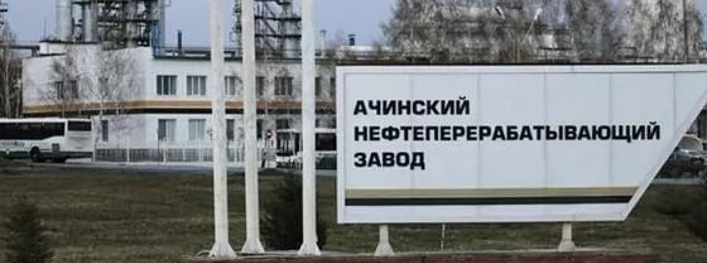

Система контроля технических устройств (СКТУ)
МАРТ 24, 2021


Команда Лаборатории бизнес-аналитики “БИЛАБ” своими инновационными научными решениями меняет облик различных отраслей российской экономики: сельского хозяйства, электроэнергетики, нефтеперерабатывающей промышленности и спорта.
Мы детально изучаем каждую предметную область, в которой работаем, чтобы обеспечить максимальное качество и эффективность разрабатываемых программных продуктов для наших заказчиков.
Сегодня представляем вашему вниманию проект в области нефтепереработки: Система контроля технических устройств (СКТУ)
Проблема:
Cложное оборудование, установленное на нефтеперерабатывающем заводе (НПЗ), требует постоянного контроля в условия повышенной опасности
– необходимо хранить информацию о характеристиках, состоянии, сроках эксплуатации, результатах технической диагностики и экспертизы промышленной безопасности (ЭПБ) сотен устройств.
Решение:
Cистема для информационно-аналитической поддержки работы служб технического надзора, позволяющая хранить электронные паспорта всех видов технических устройств, отслеживать сроки безопасной эксплуатации
оборудования, ранжировать его по состоянию и степени опасности, определять сроки ЭПБ и технической диагностики. Система реализована в виде десктоп-приложения с десятками экранных форм, позволяющих записывать и отслеживать сотни различных данных. Работа над системой велась более 3 лет. На сегодняшний день СКТУ внедрена
и эффективно работает на Ачинском, Сызранском и Саратовском НПЗ.